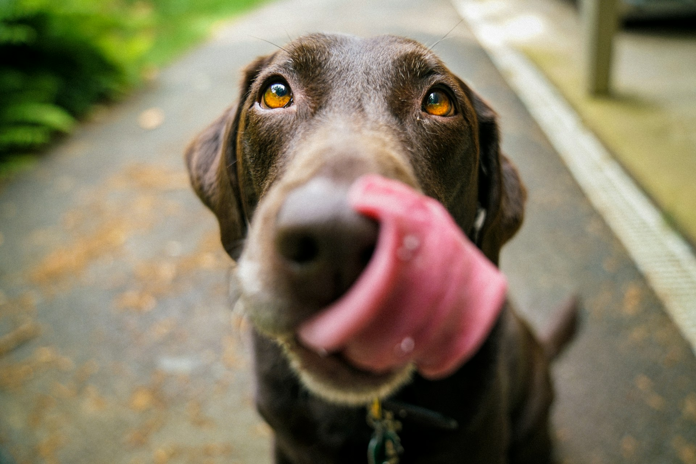
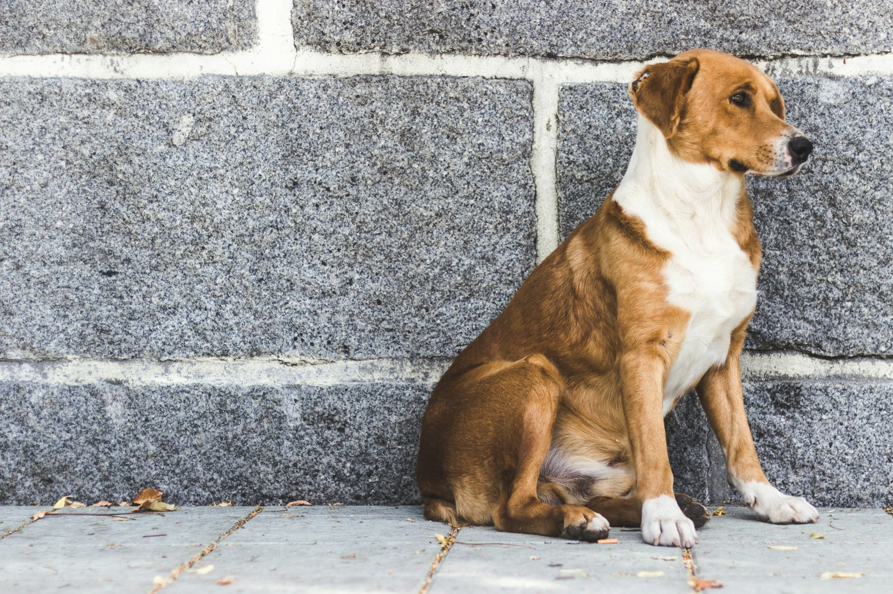
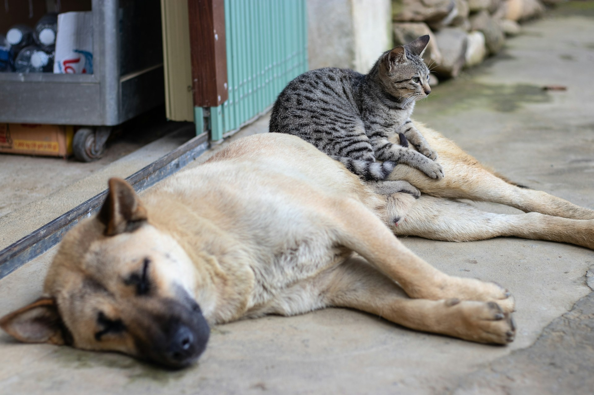

Objetivo
Criar um ambiente mais propicio para a busca de informações de animais perdidos ou para adoção.
Por quê?
Por conta da quantidade de redes sociais, fazendo com que as buscas de informações fiquem mais difícil.
Motivação
Sabemos o quão difícil pode ser encontrar um animal perdido ou até mesmo adotar um, pois nem todos sabem por onde começar a procurar.